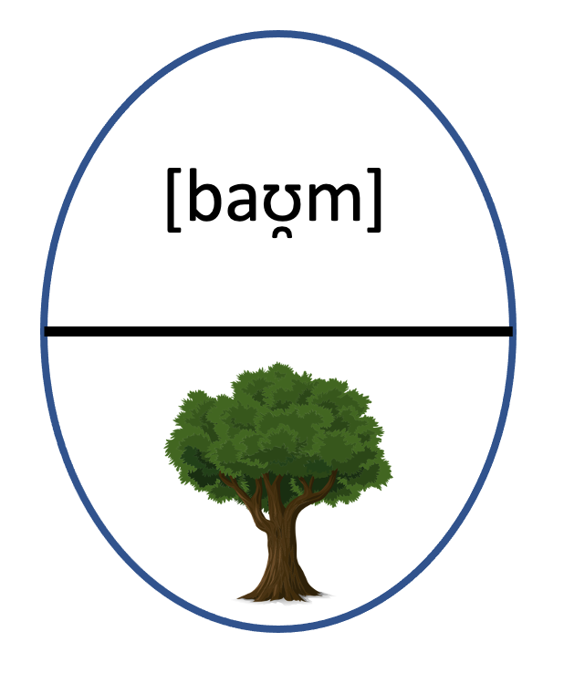
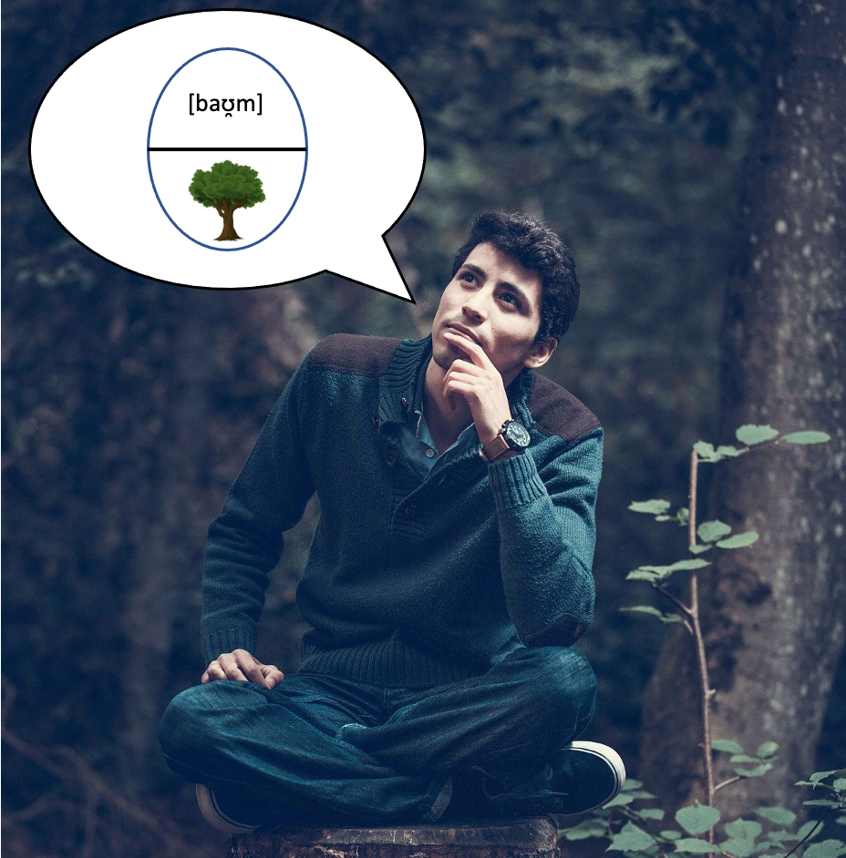
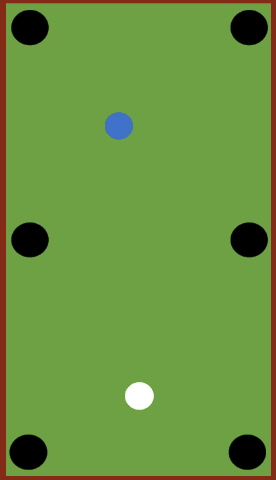

Fragestellungen und Hypothesen
Wissenschaftliche Fragestellungen und Hypothesen
Wenn wir empirisch arbeiten, geht es uns darum, wissenschaftliche Fragestellungen auf Grundlage von Daten zu beantworten. Daher ist es sinnvoll, dass wir uns zunächst einmal klarmachen, was eine wissenschaftliche Fragestellung ist.
Wir möchten eine konkrete Forschungsfrage mit Hilfe wissenschaftlicher Methoden beantworten. Aber was ist eigentlich eine Fragestellung? Und wie unterscheidet sich eine Fragestellung von einer Hypothese?
Die Fragestellung ist das Erkenntnisinteresse, das der Untersuchung zugrundeliegt. Beispiel: Sie möchten wissen, ob Linguistik-Studierende in Düsseldorf über umfassendere Kenntnisse zum empirischen Arbeiten verfügen als Linguistik-Studierende in Köln.
Das ist eine wissenschaftlich valide Fragestellung, die sich einfach in eine Hypothese umformulieren lässt:
Fragestellung: Verfügen Linguistik-Studierende in Düsseldorf über bessere Kenntnisse zum empirischen Arbeiten als Linguistik-Studierende in Köln?
Hypothese: Linguistik-Studierende in Düsseldorf verfügen über bessere Kenntnisse zum empirischen Arbeiten als Linguistik-Studierende in Köln. oder: Linguistik-Studierende in Düsseldorf verfügen über genauso gute Kenntnisse zum empirischen Arbeiten wie Linguistik-Studierende in Köln.
 Manchmal hat man eine bestimmte Erwartung, in welche Richtung das Ergebnis gehen wird. Diese Erwartung kann sich beispielsweise aus der existierenden Forschungsliteratur oder aus theoretischen Vorannahmen speisen. Wenn ich beispielsweise aus der bisherigen Forschungsliteratur weiß, dass Linguistik-Studierende in Düsseldorf tendenziell überdurchschnittlich viel über empirisches Arbeiten wissen, liegt die Annahme nahe, dass sie in meiner Studie auch besser abschneiden werden als ihre Kölner Kommiliton*innen.
Manchmal hat man eine bestimmte Erwartung, in welche Richtung das Ergebnis gehen wird. Diese Erwartung kann sich beispielsweise aus der existierenden Forschungsliteratur oder aus theoretischen Vorannahmen speisen. Wenn ich beispielsweise aus der bisherigen Forschungsliteratur weiß, dass Linguistik-Studierende in Düsseldorf tendenziell überdurchschnittlich viel über empirisches Arbeiten wissen, liegt die Annahme nahe, dass sie in meiner Studie auch besser abschneiden werden als ihre Kölner Kommiliton*innen.
In diesem Fall kann ich eine gerichtete Hypothese formulieren. Andernfalls formuliere ich eine ungerichtete Hypothese, also eine, die in beide Richtungen offen ist.
Was macht nun aber eine wissenschaftliche Hypothese aus? Wahrscheinlich könnten wir uns alle intuitiv darauf einigen, dass so etwas wie “Kamillentee schmeckt gut” oder “Pinguine sind toll” keine wissenschaftlichen Hypothesen sind. Aber warum nicht? Hier lohnt es sich, einen Blick auf eine einschlägige Definition für wissenschaftliche Hypothesen zu werfen.
Was macht eine wissenschaftliche Hypothese aus?
Bortz & Döring (2006: 4) definieren eine wissenschaftliche Hypothese wie folgt:
- Eine wissenschaftliche Hypothese bezieht sich auf reale Sachverhalte, die empirisch untersuchbar sind.
- Eine wissenschaftliche Hypothese ist eine allgemeingültige, über den Einzelfall oder ein singuläres Ereignis hinausgehende Behauptung („All-Satz“).
- Einer wissenschaftlichen Hypothese muss zumindest implizit die Formalstruktur eines sinnvollen Konditionalsatzes („Wenn-dann-Satz“ bzw. „Je-desto-Satz“) zugrunde liegen.
- Der Konditionalsatz muss potenziell falsifizierbar sein, d.h., es müssen Ereignisse denkbar sein, die dem Konditionalsatz widersprechen. sein, d.h., es müssen Ereignisse denkbar sein, die dem Konditionalsatz widersprechen.
Schauen wir uns die vier Kriterien im Blick auf das oben diskutierte Beispiel der Düsseldorfer vs. Kölner Linguistik-Studierenden an:
-
Das erste Kriterium ist erfüllt, denn in Köln und Düsseldorf gibt es Linguistik-Studierende, die mehr oder weniger Ahnung vom empirischen Arbeiten haben. Es handelt sich also um einen realen Sachverhalt. Ist er auch empirisch untersuchbar? Ja, denn dafür muss die Voraussetzung gegeben sein, dass es sich um etwas (zumindest indirekt) Beobachtbares handelt. Um zu untersuchen, wie gut die Kölner und Düsseldorfer Studierenden im empirischen Arbeiten sind, bieten sich verschiedene Herangehensweisen an (zu diesem Aspekt der Operationalisierung mehr im nächsten Abschnitt).
-
 Die Aussage bezieht sich auf die Gesamtheit der Linguistik-Studierenden, nicht nur auf einzelne Personen (auch wenn evtl. nur eine Stichprobe untersucht wird). Damit ist auch das zweite Kriterium erfüllt.
Die Aussage bezieht sich auf die Gesamtheit der Linguistik-Studierenden, nicht nur auf einzelne Personen (auch wenn evtl. nur eine Stichprobe untersucht wird). Damit ist auch das zweite Kriterium erfüllt. -
Die Aussage lässt sich prinzipiell in einen Wenn-dann-Satz umformulieren: WENN eine Linguistik-Studentin in Düsseldorf studiert, kennt sie sich besser mit empirischem Arbeiten aus als dies bei ihren Kölner Kommiliton*innen der Fall ist.
-
Unsere Studie könnte ergeben, dass die Kölner Studierenden genauso gut oder sogar besser sind als die Düsseldorfer. Damit ist auch das vierte Kriterium erfüllt, dass Ereignisse denkbar sind, die dem soeben formulierten Wenn-dann-Satz widersprechen.
Powered by Quizlib, used under the Apache License.
Richtig: Im Deutschen gibt es viele Anglizismen ist keine wissenschaftliche Hypothese, denn die Aussage lässt sich nicht ohne weiteres in einen Wenn-dann-Satz oder einen Je-desto-Satz umformulieren. Das liegt schlicht daran, dass eine Vergleichsgröße fehlt. Der Anteil der Anglizismen im Deutschen ist in den letzten 20 Jahren gestiegen wäre hingegen eine wissenschaftliche Hypothese, die sich auf Grundlage entsprechender Daten überprüfen lässt. Auch die Aussage Alexander Laschs Youtube-Kanal ist besser als Netflix ist natürlich keine wissenschaftliche Hypothese. Das liegt daran, dass hier eine subjektive Bewertung vorgenommen wird und somit keine Beobachtbarkeit vorliegt, das Prinzip der empirischen Untersuchbarkeit also nicht erfüllt ist. Da subjektive Wertungen zudem sehr individuell sind, liegt auch kein “All-Satz” vor. Folgerichtig sind auch keine Ereignisse denkbar, die der Aussage widersprechen – nicht weil Alexander Laschs Videos so gut wären (das natürlich auch 😀), sondern weil wir keinen objektiven Bewertungsmaßstab haben. Das heißt natürlich nicht, dass wir nicht die Wahrnehmung der Videos (also ob sie von Zuschauer*innen überindividuell als besonders gelungen empfunden werden) nach klar operationalisierten Kriterien untersuchen könnten. Dann müssten wir aber die Hypothese entsprechend umformulieren, z.B. Alexander Laschs Videos sind bei Zuschauer*innen im Durchschnitt populärer als der durchschnittliche Netflix-Inhalt.
Operationalisierung
Die Formulierung von Forschungsfragen und Hypothesen ist aber nur der erste Schritt. Die Fragestellung muss dann noch operationalisiert, d.h. in ein konkretes, tatsächlich umsetzbares Forschungsprojekt „übersetzt“ werden.

Wenn Sie zum Beispiel erfassen wollen, wie gut sich Kölner und Düsseldorfer Studierende mit empirischen Methoden auskennen, müssen Sie zunächst einmal entscheiden, wie Sie diese Kompetenz “messen” wollen. Denn es gibt nach allem, was wir wissen, kein Empirische-Methoden-Gen, das wir einfach sequenzieren und damit eine absolut objektive Antwort auf unsere Fragestellung gewinnen könnten. Zudem müssten wir prinzipiell alle Studierenden linguistischer Fächer in unsere Studie mit einbeziehen – wenn wir sehr viel Zeit und/oder Geld haben, ist das vielleicht machbar, aber meist müssen wir andere Wege gehen und mit Stichproben arbeiten. Der Arbeitsschritt der Operationalisierung, also der “Übersetzung” in ein konkretes Forschungsprojekt, bringt daher Fragen mit sich, die sich in eine übergeordnete Frage zusammenfassen lassen:
Wie nähere ich mich meinem Untersuchungsgegenstand an?
Die Folgefragen, die sich daraus ergeben, lassen sich grob in zwei Teile untergliedern:
-
Fragen zur Annäherung an den Untersuchungsgegenstand in quantitativer Sicht. In den meisten Fällen können wir die Population, die wir untersuchen, nicht vollständig (man sagt auch: exhaustiv, also ‘erschöpfend’) in unsere Untersuchung einbeziehen. Mit “Population” ist dabei die Grundgesamtheit dessen gemeint, was wir untersuchen: in unserem obigen Beispiel sind es Studierende der Linguistik in Düsseldorf und Köln, bei anderen Fragestellungen könnte es z.B. eine bestimmte Textsorte sein (Kochrezept, Zeitungsartikel...) oder auch eine abstraktere Größe wie “die deutsche Sprache”.
-
Oft können wir die Population jedoch nicht direkt untersuchen. Sprecher*innen des Frühneuhochdeutschen zum Beispiel können wir nicht mehr befragen, oder zumindest können wir keine allzu aufschlussreichen Antworten von ihnen erwarten. Stattdessen müssen wir uns mit dem begnügen, was sie hinterlassen haben – beispielsweise ihren Texten. Das führt uns zur Frage, wie wir uns unserem Untersuchungsgegenstand in qualitativer Sicht annähern. Hier geht es, grob gesagt, um wissenschaftliche Modellierung – darüber mehr im nächsten Abschnitt. Hier begnügen wir uns mit einfachen Beispielen: Wir können nicht genau wissen, wie Menschen um 1500 gesprochen haben. Aber wir können uns der Sprache um 1500 mit Texten aus dieser Zeit annähern. Wir können nicht sehen (oder sonstwie objektiv wahrnehmen), ob eine Person intelligent ist oder nicht. Aber wir können beobachten, ob eine Person komplexe Probleme lösen kann. Auf diesem Prinzip basieren IQ-Tests. Sie nähern sich einer unbeobachtbaren Größe – Intelligenz – an, indem sie sie mit Hilfe beobachtbarer Daten modellieren. Damit operationalisieren sie diesen Untersuchungsgegenstand. Ob diese Operationalisierung tatsächlich eine gute Annäherung an den Untersuchungsgegenstand bietet, darüber kann und muss man dann streiten – gerade bei IQ-Tests zum Beispiel bestehen mittlerweile erhebliche Zweifel an ihrer Aussagekraft.
Der ICE und die Modelleisenbahn
Wir haben gesehen, dass wir einen Untersuchungsgegenstand nie ganz erfassen, sondern dass wir ihm uns nur annähern können. Diese Annäherung erfolgt, indem wir mehr oder weniger stark vereinfachte Annahmen über den Untersuchungsgegenstand machen und diese überprüfen. Wir arbeiten also letztlich immer mit Modellen, die sich teils aus unserem Vorwissen, teils aus theoretischen Annahmen speisen. Sicher ist Ihnen auch schon aufgefallen, dass man in Bezug auf einzelne Ansätze, die unbeobachtbare oder nur mittelbar beobachtbare Phänomene zu erklären versuchen, häufig von Modellen spricht. In den Naturwissenschaften gibt es beispielsweise das Atommodell. In der Linguistik ist das Zeichenmodell von Saussure sehr bekannt.
Natürlich begegnen uns sprachliche Zeichen im Alltag nicht in zweigeteilten eierförmigen Blasen, die Ausdrucks- und Inhaltsseite beinhalten. Unsere Konversationen wären sonst auch etwas merkwürdig.

 Das Zeichenmodell versucht vielmehr, eine Alltagsbeobachtung “greifbar” zu machen, nämlich dass sprachliche Zeichen eine Ausdrucksseite haben (ihre phonologische Form), die konventionell für etwas Bestimmtes steht – die Inhaltsseite. Damit vereinfacht das Modell den Prozess des Sprachgebrauchs und des Sprachverstehens natürlich erheblich: Es blendet zum Beispiel aus, dass in diesen Prozess auch die Sprachbenutzer*innen (und deren Gehirne) involviert sind, und es blendet aus, dass keineswegs immer eine klare 1:1-Beziehung zwischen Form und Inhalt vorliegt, sondern Wörter auch sehr viele verschiedene Bedeutungsnuancen haben können und es auch auf der Formseite z.B. verschiedene Aussprachevarianten geben kann.
Das Zeichenmodell versucht vielmehr, eine Alltagsbeobachtung “greifbar” zu machen, nämlich dass sprachliche Zeichen eine Ausdrucksseite haben (ihre phonologische Form), die konventionell für etwas Bestimmtes steht – die Inhaltsseite. Damit vereinfacht das Modell den Prozess des Sprachgebrauchs und des Sprachverstehens natürlich erheblich: Es blendet zum Beispiel aus, dass in diesen Prozess auch die Sprachbenutzer*innen (und deren Gehirne) involviert sind, und es blendet aus, dass keineswegs immer eine klare 1:1-Beziehung zwischen Form und Inhalt vorliegt, sondern Wörter auch sehr viele verschiedene Bedeutungsnuancen haben können und es auch auf der Formseite z.B. verschiedene Aussprachevarianten geben kann.
Wenn wir Wissenschaft betreiben, dann tun wir das in der Regel also mit Hilfe von Modellen. Diese Modelle reduzieren die Komplexität der beobachteten Phänomene erheblich. Der Anthropologe Richard McElreath hat dafür in seinem Buch “Statistical Rethinking” die anschauliche Metapher von “großer Welt” und “kleiner Welt” gewählt. Wenn wir wissenschaftlich arbeiten, wollen wir Aussagen über die “große Welt” treffen, indem wir sie auf der Ebene der “kleinen Welt” modellieren. Je nach Erkenntnisinteresse können die Modelle dabei unterschiedlich detailliert sein. Es ist jedoch wichtig, Aussagen über die beiden Ebenen auseinanderzuhalten. Deshalb wollen wir genau das einmal üben!
Bitte ordnen Sie zu: Welche Aussage bezieht sich auf die reale Welt, welche auf ein Modell?
-
“Im Wintersemester 2018/19 waren an der HHU Düsseldorf 36.464 Studierende eingeschrieben.” -
“Im Jahr 2019 hatte jede Frau in Deutschland im Schnitt 1,54 Kinder.”
All Answers Answered
Answers Remain
Die Beispiele zeigen, dass es nicht immer einfach ist, die beiden Ebenen zu trennen. Warum ist beispielsweise die Aussage “Im Jahr 2019 hatte jede Frau in Deutschland im Schnitt 1,54 Kinder.” auf der Modell-Ebene anzusiedeln, obwohl sie auf konkreten Daten ( des Statistischen Bundesamts) beruht? Hier ist die Antwort relativ einfach: Natürlich hat keine Frau anderthalb Kinder. Wenn wir mit Durchschnittswerten arbeiten, abstrahieren wir über die konkreten Gegebenheiten in der Realität – in diesem Fall basteln wir uns quasi eine “Durchschnitts-Frau”, die es so natürlich nicht gibt.
Und warum siedeln wir eine Aussage wie “X senkt das Risiko, an Demenz zu erkranken” auf der Ebene des Modells, obwohl solchen Aussagen im Regelfall statistische Erhebungen zugrundeliegen, die Daten aus der realen Welt mit einbeziehen? – Dafür gibt es mehrere Gründe:
-
1. Wie zuvor schon erläutert, werden hier komplexe Zusammenhänge stark vereinfacht und auf einen Aspekt heruntergebrochen. Deshalb ist es sinnvoll, eine solche Aussage zunächst einmal in der “kleinen Welt” zu verorten.
-
Es wird ein kausaler Zusammenhang angenommen, also ein Ursache-Wirkung-Zusammenhang. Ein solcher Zusammenhang ist aber in der Regel nicht unmittelbar beobachtbar. Daher verorten wir ihn auf der Ebene des Modells.
Auf diesen letzten Punkt lohnt es sich näher einzugehen, denn er führt uns zu einer wichtigen Frage: Was können wir aus empirischen Daten über kausale Zusammenhänge ableiten?
Korrelation und Kausalität
Wenn Sie sich mit empirischem Arbeiten beschäftigen, werden Sie früher oder später dem Leitsatz begegnen: Korrelation ist nicht Kausalität! Was ist damit gemeint?
Schauen wir uns folgende Beispiele an, die auf Daten aus den USA aus den Jahren 1999 bis 2009 beruhen:
-
 In Jahren, in denen mehr Filme mit Nicolas Cage ins Kino gekommen sind, sind mehr Menschen in Swimmingpools ertrunken als in anderen Jahren.
In Jahren, in denen mehr Filme mit Nicolas Cage ins Kino gekommen sind, sind mehr Menschen in Swimmingpools ertrunken als in anderen Jahren. -
In Jahren, in denen beim US-Buchstabierwettbewerb “National Spelling Bee” die zu buchstabierenden Wörter kürzer waren, sind weniger Menschen am Biss einer Giftspinne gestorben.
Diese und weitere Daten sind hier zu finden. Es ist relativ offensichtlich, dass die scheinbaren Zusammenhänge keine sind. In solchen Fällen spricht man von Scheinkorrelationen (engl. spurious correlations). Und während die genannten Beispiele absurd genug sind, um zu dem Schluss zu gelangen, dass höchstwahrscheinlich kein Zusammenhang zwischen den genannten Variablen besteht, ist es in anderen Fällen weitaus schwieriger zu beurteilen, ob ein Zusammenhang kausal ist, also ein Ursache-Wirkung-Zusammenhang besteht, oder lediglich korrelational, d.h. eine Wenn-dann-Verbindung zwischen beiden zu beobachten ist, die aber auch zufällig zustande gekommen sein kann. Im Grunde sind Kausalzusammenhänge nie direkt beobachtbar. Nehmen wir ein häufig verwendetes Beispiel: Billardkugeln.
Stellen wir uns vor, die weiße Kugel berührt eine andere Kugel, worauf diese sich in Bewegung setzt. Natürlich ist uns klar, dass die Berührung der weißen Kugel der Grund dafür ist, dass sich die andere Kugel bewegt. Aber streng genommen können wir nicht wissen, dass ein kausaler Zusammenhang zwischen diesen Ereignissen besteht. Denn der Kausalzusammenhang ist nicht beobachtbar. Wir wissen aber aus unserer Alltagserfahrung, dass bei der Bewegung von Objekten bestimmte Korrelationen so robust auftreten, dass sie quasi als Gesetzmäßigkeiten gelten können. In der Physik wurden diese Gesetzmäßigkeiten etwa in den Newtonschen Gesetzen beschrieben. Diese Gesetzmäßigkeiten sind so gut belegt und auch so sehr in unserem Alltagswissen verankert, dass es fast absurd erscheint, den Kausalzusammenhang in unserem Beispiel des Billardstoßes auch nur ansatzweise in Frage zu stellen. Und dennoch gilt, dass wir den Kausalzusammenhang nicht sehen können. Rein theoretisch bestünde die Möglichkeit, dass die Kugel sich aus eigener Kraft bewegt. Das ist natürlich sehr unwahrscheinlich und würde bedeuten, dass die Physik über Jahrhunderte völlig danebengelegen hätte. Aber rein auf Grundlage dessen, was wir beobachten können, ist diese Option nicht letztgültig auszuschließen – und das ist der Grund, warum es in der Wissenschaft letztgültige Wahrheiten fast niemals geben kann.
Damit wollen wir aber unseren wissenschaftsphilosophischen Exkurs beenden – denn auch wenn es keine endgültigen Gewissheiten geben kann, wollen wir doch versuchen, der Wahrheit (um noch ein großes Wort zu verwenden) so nah wie möglich zu kommen. Und genau dafür brauchen wir empirische Daten.
< Zurück Übersicht Weiter >